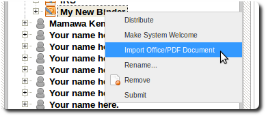

Imports and Exports
Importing and exporting pages and binders
Users can export their content for external use or printing.
Content can be exported to PDF,PNG & SVG.
Similarly users can import PDF, Microsoft word and powerpoint documents.
-
To import into an existing binder, right-click on the binder and select "Import Office/PDF Document".
 -
To import as a new binder, right-click on your name in the navigation panel and select "Import Office/PDF Document".
The imported file would have the same name as the file imported.